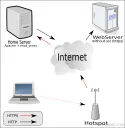

Apache, https and reverse proxy
Introduction
Being
stingyalways on the lookout for good deals, I take advantage of a free offer to host this site (at 1and1, a company I do not recommend if you have to pay, for many reasons that would be off topic here).In short, free often means a bare minimum service (well, even if in my case that is not quite true).
In fact, what I am really missing is the ability to connect to my site over https.Why? Simple. I sometimes need to access the administration area from public places (hotspots for example). And I admit that the idea of typing my password while knowing full well that it will travel in the clear bothers me a lot (yes, really, especially when there is a way to avoid it).
A solution
Already owning a personal server under OpenBSD at home (or home server, a term that may soon become fashionable), I have long used Apache’s mod_ssl on it in order to have https access.

The idea is therefore to use mod_proxy to turn my home server into a gateway allowing a kind of “secure” tunnel to be opened between my laptop and the administration pages.The following example is valid under OpenBSD. For other systems, the files will not necessarily be in the same directory, and the problems may be different.
In theory, it is enough to modify httpd.conf (in /var/www/conf/ ) by enabling proxy mode (if it is not already done) and adding a few lines at the end of the SSL Virtual Host Context.
# caching proxy LoadModule proxy_module /usr/lib/apache/modules/libproxy.so ## ## SSL Virtual Host Context ## <VirtualHost _default_:443> # General setup for the virtual host [...] <IfModule mod_proxy.c> ProxyRequests Off <Directory proxy:*> Order deny,allow Allow from all </Directory> ProxyPass /textadmin/ http://nezetic.net:80/textpattern/ ProxyPassReverse /textadmin/ http://nezetic.net:80/textpattern/ </IfModule> </VirtualHost>To use the reverse proxy, you open the page via http://monhomeserver.net/textadmin/ (the trailing slash is very important). And there you go.
Except that, under OpenBSD, this does not work.
Indeed, it seems that the Apache fork of this wonderful system is buggy.
And whatever you do, mod_proxy returns an unfortunate host not found.After research, I understood the problem, and I found a solution (not without difficulty, thank you Google).
The problem appears if you have a normal configuration, with the ServerName variable set as it should be. If you comment it out, the reverse proxy works.
Except that commenting it out is bad.
Hence a solution that is, to say the least, strange (and at the same time logical, when you know that OpenBSD’s Apache runs in a cage).
It is enough to create an etc directory at the root of the cage ( /var/www ), then add a hosts file to it, containing on the first line the local IP corresponding to the ServerName, and on the 2nd line, the IP of the remote server (here nezetic.net).
192.168.1.2 monhomeserver.net 82.165.72.200 nezetic.net www.nezetic.netAnd poof, everything works like magic (or almost).
Conclusion
You can improve the reverse proxy by using an Apache mode such as mod_proxy_html (which I do not recommend; it creates a heavy load and tends to modify a little too much the HTML code that your server spits out), but in most cases, what I describe above is enough.
And even if use over HTTPS is far from completely safe, it has the merit of being there, reassuring…
Sources & Further reading
www.apachetutor.org/admin/reverseproxies
hsc.fr/ressources/breves/pourquoi-relais-inverse.html
httpd.apache.org/docs/1.3/mod/mod_proxy.htmlby Cédric TESSIER on
{kind=link}